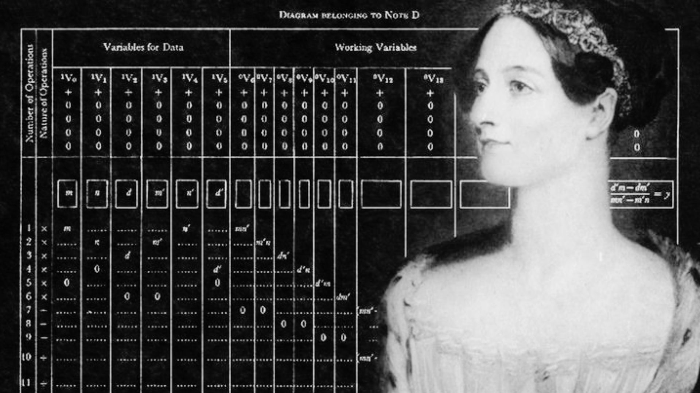

LA MADRE
ADA
LOVELACE
DE LA PROGRAMACIÓN
BIOGRAFÍA
La visionaria que
programó el futuro.
Ada Lovelace (1815 a 1852) fue una matemática británica
conocida por desarrollar el primer algoritmo pensado
para ser ejecutado por una máquina. Colaboró con Charles
Babbage en la máquina analítica, una de las primeras
computadoras mecánicas. En 1843, escribió un algoritmo
para calcular los números de Bernoulli, lo que la convierte
en la primera programadora. Aunque su trabajo pasó desapercibido
en su tiempo, hoy es considerada una pionera de la informática.
OBRAS Y ACTOS
actos en cuadro
